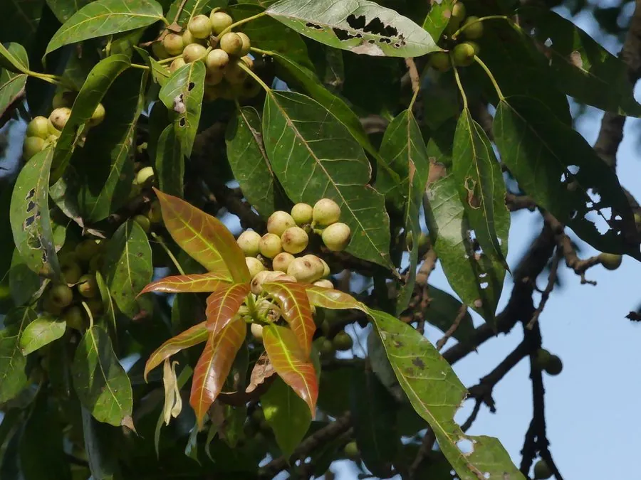

乔木 · 植物界
黄葛树 Ficus virens

中国西南常见的落叶大乔木，气生根发达、盘根错节，常栽于村口与江边，是重庆、四川等地的乡土树种。
- 分类
- 门被子植物门纲木兰纲目蔷薇目科桑科属榕属
- 栖息环境
- 海拔 1000 米以下的江边、村旁、崖壁与石缝，喜温暖湿润
- 地理分布
- 中国西南、华南地区，东南亚也有分布
- 保护级别
- 暂无评估；中国未列入国家重点保护野生植物名录
物种志
黄葛树为落叶大乔木，高可达 25 m，树冠庞大，树皮灰褐色；枝条上生有气生根，垂落后可形成支柱根；叶片互生，纸质，卵状披针形或椭圆形，先端渐尖，叶柄细长。花期 4–5 月，隐头花序生于叶腋，榕果球形，成熟时黄绿色或橙红色，内含多数细小瘦果，是鸟类与昆虫的食物。
黄葛树分布于中国西南、华南及东南亚地区，喜温暖湿润、光照充足，耐旱、耐瘠薄，在江边、崖壁与石缝中也能生长。它发叶晚、落叶早，春季新叶萌发时老叶脱落，常在同一时期呈现落叶与新叶交替的景观；气生根盘结于岩石与墙体，形成“树抱石”的独特景观。树冠遮荫面积大，是西南地区重要的庭荫树与行道树；树皮纤维可制绳，根与叶可入药。黄葛树是重庆的市树之一，在当地具有重要的文化意义。
形态与习性
- 株高可达 25 m，冠幅可达 20 m
- 花期4–5 月，隐头花序生于叶腋
- 果期7–9 月，榕果球形
- 光照喜光，也耐半阴
- 水分耐旱也耐湿
- 土壤适应性强，可在石缝中生长
- 主要用途庭荫树与行道树、树皮纤维制绳、重庆市树
趣味知识
- 黄葛树的气生根垂落后扎入土中，可形成新的支柱根，盘根错节。
- 黄葛树春季新叶萌发时老叶集中脱落，形成落叶与新绿并存的景观。
- 黄葛树的根能钻入石缝与墙体，形成“树抱石”的奇特景观。
- 黄葛树是重庆的市树之一，山城的老街与江边常见高大的黄葛树。